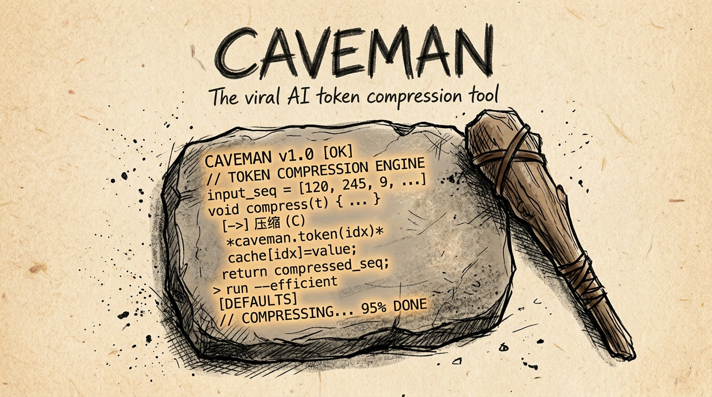
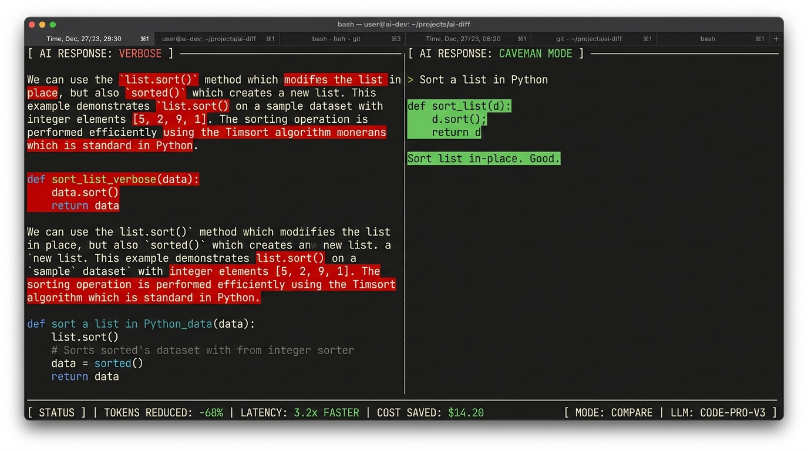

말을 줄였더니 지능이 올랐다: 밈(Meme)에서 시작된 '케이브맨' 토큰 절감 혁명
미국 시트콤 <오피스>의 케빈 말론 밈에서 탄생한 오픈소스 토큰 압축 엔진. 모델 답변의 불필요한 미사여구를 제거하고, 입력 로그와 JSON을 사전 압축하여 코딩 정확도는 유지한 채 토큰 비용을 54% 절감.
1. 미사여구의 종말: 원시인 어투가 증명한 공학적 실체
개발자가 AI 코딩 에이전트에게 버그 수정을 요청하면 터미널 화면에는 수백 줄의 장황한 해설과 공손한 인사말, 이미 알고 있는 뻔한 설명이 폭포수처럼 쏟아져 나온다. "고객님, 질문해 주셔서 감사합니다. 제공해주신 React 컴포넌트가 반복적으로 재렌더링되는 원인을 분석한 결과, 렌더 주기마다 인라인 객체 참조가 새롭게 생성되어..." 이러한 판에 박힌 서론과 결론, 장황한 미사여구에 개발자들의 인내심과 API 결제 카드는 분당 수천 개의 토큰 단위로 녹아내리고 있었다.
이 낭비를 참다못한 한 엔지니어가 미국 인기 시트콤 <더 오피스(The Office)>의 캐릭터 케빈 말론의 명대사, "Why waste time say lot word when few word do trick?"(많은 말 왜 해? 적은 말로 다 되는데)을 그대로 모토로 삼은 오픈소스 CLI 도구 Caveman(JuliusBrussee/caveman)을 깃허브에 공개했을 때, 처음엔 모두가 단순한 유머 프로젝트로 치부했다.
2. 6대 암석(Six Rocks) 아키텍처: 언어적 군더더기를 깎아내는 메커니즘
Caveman은 단순한 프롬프트 트릭에 머무르지 않는다. 최신 v4.0으로 진화하며 터미널과 에이전트 런타임 사이에서 입출력을 실시간 가로채는 독립 양방향 프록시 아키텍처로 완성되었다. 시스템은 '6개의 암석(Six Rocks)'이라 불리는 모듈식 파이프라인을 통해 토큰이 누수되는 모든 지점을 봉쇄한다.
첫째, Say Less(출력 압축): 모델이 코드 블록 외의 자연어 설명을 작성할 때 군더더기 없는 극초단문 구조로 답변하도록 유도하여 출력 토큰을 68% 이상 압축한다. 이때 코드는 단 1바이트의 오차도 없이 100% 원본 그대로 유지된다. 둘째, Read Less(입력 압축): 터미널 테스트 로그, JSON, CSV 덤프 등 에이전트가 도구(Tool)로 읽어 들이는 거대한 데이터 스트림을 V8 레벨에서 전처리하여 중복 줄바꿈과 무의미한 스택트레이스를 33.2% 잘라낸다. 셋째, Auto & Blocks(모델 라우팅 및 코드 캐싱): 요청의 난이도에 따라 최적의 추론 비용을 계산하여 모델과 effort를 동적 할당하며, 에이전트가 작성한 검증 스크립트를 재사용하여 반복 테스트 토큰을 397개에서 76개로 축소한다.
이 아키텍처의 위력은 학계와 산업계의 공식 검증으로 입증되었다. 어도비 리서치(Adobe Research)는 최신 논문 CAVEWOMAN에서 Caveman의 언어 압축 기법을 공식 인용하며 모델의 reasoning 벤치마크 저하 없이 추론 비용을 1.4~2.4배 절감할 수 있음을 이론적으로 증명했다. 젯브레인스(JetBrains) 또한 내부 코딩 에이전트 실험에서 동일한 해결률(18/18)을 기록하면서 전체 세션 비용이 54% 급감했음을 A/B 테스트 리포트로 발표했다.

3. 빅테크의 '토큰 인플레이션'과 오픈소스 진영의 '토큰 다이어트' 대결
Caveman의 폭발적 흥행은 거대 언어 모델 API를 판매하는 빅테크 기업들의 비즈니스 모델에 정면으로 의문을 던진다. 클라우드 API 제공업체들은 입출력 토큰당 비용을 청구하기 때문에, 모델이 공손하고 장황하게 길게 말할수록 더 많은 매출을 올리는 이해관계의 불일치(Conflict of Interest)가 구조적으로 존재해 왔다.
RLHF(인간 피드백 기반 강화학습) 과정에서 주입된 '과도한 아첨(Sycophancy)'과 '설명벽(Verbosity)'은 사용자의 호감을 사기 위한 장치였지만, 고성능 코딩 에이전트의 관점에서는 치명적인 비용 낭비이자 추론 방해 요인이었다. Caveman은 오픈소스 커뮤니티가 플랫폼의 수익화 구조에 종속되지 않고, 독자적인 프록시 계층을 구축하여 토큰 인플레이션을 통제할 수 있음을 증명한 상징적 사건이다.
4. 맺음말: 적은 말이 더 큰 지능을 만든다
고대 철학자들은 "말이 많으면 허물이 많아진다(多言多敗)"고 경고했다. 최첨단 인공지능 엔지니어링 역시 마찬가지다. 수십억 달러짜리 초거대 모델이 인간의 군더더기 언어 습관을 무비판적으로 답습하며 둔해져 있던 순간, 원시인의 돌도끼 같은 단순함이 본질을 일깨웠다. "코드만 정확하면 두뇌는 여전히 거대하다(Code stay exact. Brain still big)." 에이전트 시대의 진정한 혁신은 모델의 파라미터를 키우는 것이 아니라, 낭비되는 언어의 껍데기를 벗겨내는 데서 시작되고 있다.